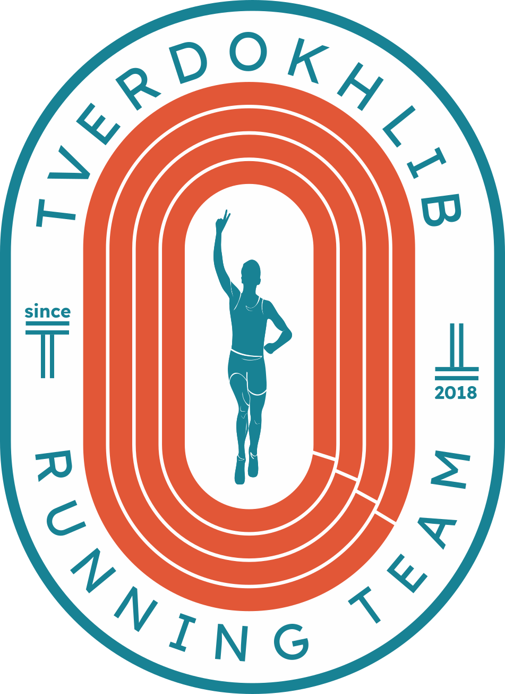
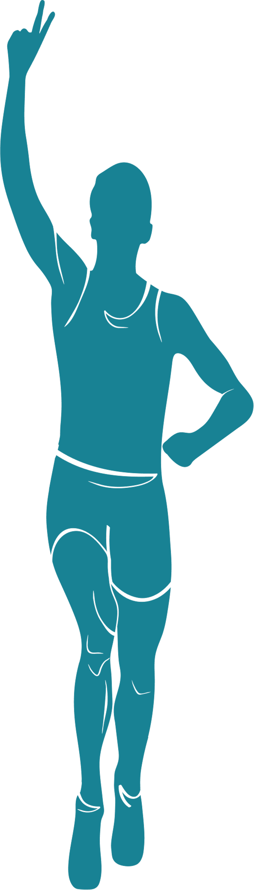
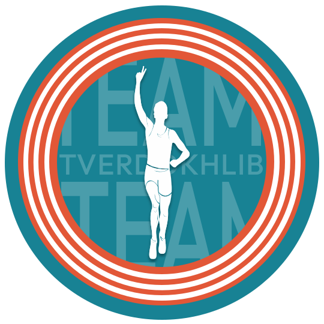
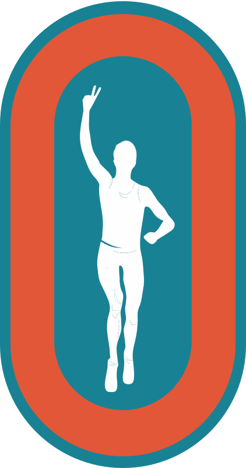
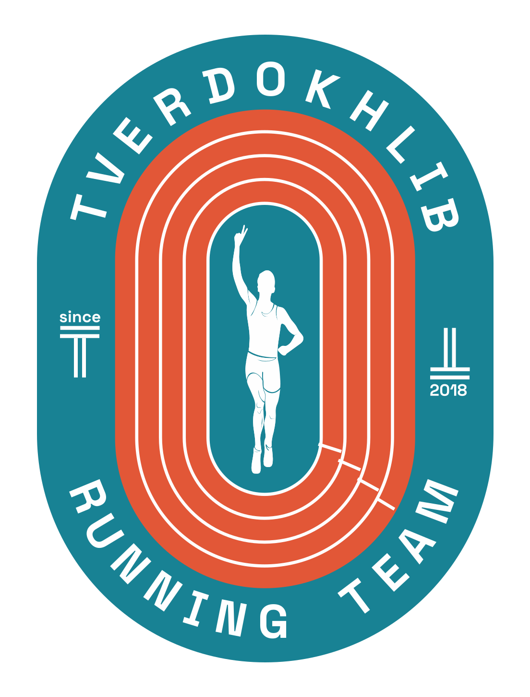
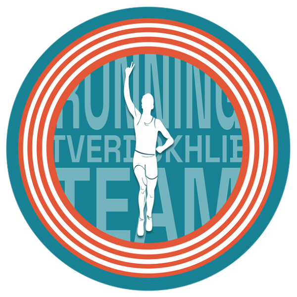

Tverdokhlib
Running Team
A complete identity for a running club — one emblem, built to hold its meaning from a stadium banner down to a profile avatar.

Helsinki, 1994 — the moment in the mark.
The club was founded by a family of athletes across several generations, so the logo points to a specific historical moment. In 1994, in the men’s 400 m hurdles final at the European Championships in Helsinki, the founder’s father — Oleh Tverdokhlib — won the race and set a Ukrainian record of 48.06 seconds. That triumph became the foundation of the identity: the silhouette in the logo stands for victory, sporting heritage and the power of tradition the team was born from — a reminder that the club is built on a real history of records, races and years of work on the track.

A running club built on real history.
Tverdokhlib Team brings together people who train under experienced coaches and want to grow in a structured, safe way — from complete beginners to marathon athletes.
The name comes from the surname of the co-founder’s father — a European champion and record holder.
It carries a champion’s surname — and the standard that comes with it.
An emblem you read at a glance.
↳ HOVER A PART OR A LABEL TO CONNECT THEM
TVERDOKHLIB RUNNING TEAM curves along the outer oval.
Stylised lanes loop like a stadium oval — unity and the shared path.
The runner crossing the line — the 1994 moment, at the centre.
Founding markers anchor the left and right of the badge.
Room to breathe — measured by the runner.
Minimum clear space keeps the logo legible. The spacing module is the runner figure itself — keep at least its height free on every side. Below the minimum size the details merge together, so it counts as incorrect use.

Clear space X = the runner figure’s height — keep at least that free on every side. Minimum size 30 mm / 320 px.

Same module at small scale. Minimum size 15 mm / 320 px.
Track teal, lane orange, chalk.
↳ CLICK A SWATCH TO COPY ITS HEX
Space Grotesk — clean, structured, modern.
NOPQRSTUVWXYZ
0123456789
Space Grotesk carries the identity: a geometric grotesk with no unnecessary decoration, legible at small sizes and in digital interfaces.
Three marks, one badge.
Full emblem — for large applications.

Cleaner shape — for smaller merch.
Circular — for avatars; min 24 px.
Correct on any surface — and what to never do.

Full colour on light and on lane orange; the reversed badge on teal and ink. Always keep strong contrast.
Never stretch, recolour, rotate, add effects or place the mark on a busy, low-contrast surface.
On kit, on walls, on the feed.
One avatar, full recognition.
The circular mark holds its shape down to a thumbnail — the silhouette stays legible at every size the feed demands.

84px